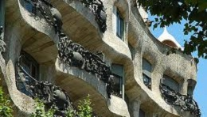
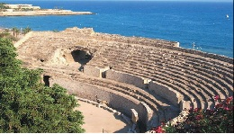
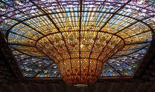
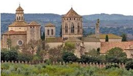

Descargar los siguientes archivos
Arte Rupestre Obra de Gaudí Tárraco Domènech i Montaner Vall de Boí La Patum de Berga Poblet
El conjunto de arte rupestre del arco mediterráneo de la Península Ibérica fue declarado Patrimonio Mundial en 1998.
El conjunto engloba 757 yacimientos y pinturas rupestres, de los cuales 60 están situados en comarcas catalanas. Se trata, por lo tanto, del conjunto de yacimientos de arte rupestre más grande de Europa.
Las comunidades que vivieron aproximadamente entre los años 6.000 y 1.000 a.C en el arco mediterráneo de la Península Ibérica nos han legado pinturas como muestra de su civilización.
Estas pinturas nos informan sobre cómo vivían, con qué animales convivían o cómo vestían, pero también plantean muchos interrogantes sobre sus creencias, su organización y otros aspectos que difícilmente llegaremos a conocer.
Abrigos de ermitas de la Sierra de la Pietat (Ulldecona, Montsia)
Se trata de un conjunto de 10 abrigos situados en la Sierra del Godall, muy cerca de la ermita de la Pietat. Es el conjunto más importante de pinturas rupestres de estilo levantino en Cataluña y son del Neolítico.
Las pinturas fueron descubiertas en el 1975 por miembros del Equipo Infantil de Espeleología del Centro Cultural Recreativo.
Se trata de figuraciones de trazo simple, aunque también se observan dibujos simplemente contorneados o realizados con la técnica del punteado. Los colores utilizados muestran diferentes tonalidades muy oscurecidas de rojos y castaños.
Roca de los Moros (el Cogul, las Garrigas)
Las pinturas, localizadas en una gruta muy cercana a El Cogul, fueron descubiertas en 1908 por Ramón Huguet, un capellán del pueblo. Su descubrimiento tuvo mucho eco y pronto se convirtió en uno de los yacimientos rupestres más importantes de la Península Ibérica.
Se han identificado 16 figuras humanas, 19 figuras de animales y 7 motivos indeterminados, todos ellos datados en el Neolítico o la Edad del Bronce.
Las pinturas corresponden a un estilo naturalista estilizado, aunque con algunas evidencias de tipo esquemático. Los colores utilizados van desde el anaranjado al castaño y adquieren, a menudo, tonalidades rosadas, rojas o violáceas.
Cueva de los Vilasos o de los Vilars (Os de Balaguer, la Noguera)
Su interior está muy ennegrecido a causa de las hogueras de pastores o visitantes, pero se pueden apreciar 29 motivos de animales cuadrúpedos, entre ellos una cierva, además de diversas figuras humanas, círculos concéntricos y trazos sin identificar.
Los motivos pictóricos presentan diferentes técnicas y colores. Se identifican desde figuras de tendencia naturalista hasta motivos esquemáticos o abstractos. Por lo que respecta a los colores, se pueden ver el negro, rojo oscuro, naranja, etc. Por su estilo, mayoritariamente esquematizado se considera que pertenecen a la Edad del Bronce.

La obra de Antoni Gaudí es el exponente más importante de la arquitectura modernista, movimiento artístico que se extiende desde finales del siglo XIX hasta principios del siglo XX.
El Parque Güell, el Palacio Güell y la Casa Milá fueron declarados patrimonio mundial en 1984. En el año 2004 se incluyeron cuatro bienes más que conforman así un conjunto muy representativo de la esencia y la evolución de la obra de Antoni Gaudí.
Heredero en cierta forma del pensamiento de figuras como Ruskin, Morris o Viollet-le-Duc, Gaudí será a su vez inspiración para futuros artistas, desde representantes del racionalismo como Le Corbusier hasta destacados miembros del surrealismo como Dalí.
La obra de Antoni Gaudí (1852-1926) se agrupa fundamentalmente en Cataluña, pero también trabajó en otros lugares de España, como Comillas (Cantabria), Astorga y León (Castilla y León) o Palma de Mallorca.
Sus creaciones se enmarcan en el contexto del Modernismo y del Renacimiento, movimientos culturales que se desarrollaron en Cataluña desde finales del siglo XIX hasta principios del XX. El Modernismo, amparado y a menudo patrocinado por la burguesía, se posicionó en la modernidad y el progreso de la época, pero también desarrolló un fuerte sentimiento hacia las tradiciones y la identidad popular.
▶️ La obra de Gaudi (descargar pdf)

El conjunto arqueológico de Tárraco fue declarado patrimonio mundial en el año 2000.
El desarrollo urbanístico de la ciudad, así como la densidad y la calidad de los restos, convierten al conjunto arqueológico en un bien universal e incomparable.
Tarragona y su entorno conservan vestigios que son testimonio de la huella de Roma en nuestro país. El conjunto incluye diversos monumentos del siglo III a.C. hasta el VI d.C., que se conservan en muy buen estado. Todos ellos son característicos de una capital de provincia como lo fue la antigua Tárraco.
Tárraco se fundó como campamento militar romano con la intención de interceptar los ejércitos cartageneses que, desde el sur de la Península Ibérica, pretendían atravesar los Pirineos y atacar la Península Itálica. El año 217 a.C., Gneu Corneli Escipió y su ejército desembarcaron cerca del río Tulcis (Francolí) junto a un poblado ibérico, y en la parte más alta de la colina se ubicó el campamento. Con el tiempo, Tárraco prosperó como ciudad y también como centro administrativo y político, favorecida tanto por la situación costera, facilitando el control de las rutas marítimas, como por su emplazamiento en relación a las vías terrestres hacia el interior peninsular. Se convirtió en colonia romana, al frente de un conventus (demarcación judicial) y capital de provincia de la Hispania Citerior o Tarraconense.
La importancia urbana de Tárraco favoreció el establecimiento de instalaciones agrícolas y residenciales a su alrededor. Es lo que se conoce como villas.
La villa de los Munts, en el actual término municipal de Altafulla, es una residencia muy lujosa probablemente propiedad de un personaje muy notable y adinerado de Tárraco. Fue construida a principios del siglo I d.C. y parece que no se abandonó hasta los siglos VI-VII d.C.
Las excavaciones arqueológicas han desvelado diversas estancias que conducen a un gran pasillo porticado que limita una gran área al aire libre, posiblemente ajardinada.
También se ha encontrado abundante material escultórico, ricos pavimentos, pinturas murales, dos complejos termales, etc.

El Palacio de la Música Catalana y el Hospital de Santa Creu i de Sant Pau, obras del arquitecto Lluís Domènech i Montaner, son dos edificaciones emblemáticas situadas en la ciudad de Barcelona que se construyeron durante los primeros años del siglo XX.
Lluís Domènech i Montaner, arquitecto imaginativo y pragmático, nació en Barcelona en 1849 en una familia acomodada muy cercana al entorno del Renacimiento catalán.
Con una personalidad liberal y erudita, sentía pasión por la arquitectura y colaboró en la difusión del Modernismo desde su cátedra de la Escuela de Arquitectura de Barcelona. También participó de manera activa en movimientos políticos catalanistas y fue elegido diputado de las Cortes españolas en 1901 y 1903.
El racionalismo arquitectónico convive con la imaginación y la riqueza decorativa característica del Modernismo, cargada de un intenso valor alegórico.
Tanto el Palacio de la Música Catalana como el Hospital de la Santa Creu i de Sant Pau son edificios de uso público en los cuales se fusionan la tradición y la modernidad. En ellos se evidencia una importante renovación de técnicas tradicionales y la incorporación de soluciones arquitectónicas nuevas. A su valor arquitectónico se suma la belleza y la exuberancia decorativa, convirtiéndose en obras de una significación artística e histórica universal.

El Valle de Boí, situado en la comarca de Alta Ribagorza, es un territorio rodeado de altas montañas. Es una de las zonas más conocidas de Cataluña gracias al patrimonio arquitectónico que concentra. Destacan 9 iglesias rurales muy bien conservadas que son un testimonio histórico, arquitectónico y artístico único de la época medieval.
Las iglesias románicas del valle de Boí son un reflejo de la sociedad y del contexto histórico de la época. Fueron declaradas patrimonio mundial en el año 2000.
La construcción de templos, que cumplían una importante función religiosa y moralizante entre los fieles, eran un testimonio de poder y un lugar de refugio para la población del valle.
De esta manera, los altos campanares de torre eran un símbolo religioso, pero también servían para propagar noticias y eran eficientes torres de vigilancia.

La Fiesta de la Patum de Berga es una celebración tradicional que se realiza durante las fiestas del Corpus Christi en la localidad barcelonesa de Berga. Ha sido declarada por la Unesco Patrimonio Cultural Inmaterial de la Humanidad el día 25 de noviembre del año 2005 e inscrita en 2008 en su lista representativa[1] y por ello elegida automáticamente como Tesoro del Patrimonio Cultural Inmaterial de España junto al Misterio de Elche. Anteriormente, en el año 1983 fue declarada por la Generalidad de Cataluña fiesta tradicional de Interés Nacional.
La Patum fue fundada a finales del siglo XIV como una fiesta de carácter esencialmente popular y se encuentra documentada desde el año 1525. En el año 1939 fue financiada por Falange Española
La celebración consiste en diversas representaciones de figuras místicas y simbólicas, que bailan al ritmo de la música y los tambores. Los bailes se caracterizan por su solemnidad, así como por la utilización de fuego y artefactos pirotécnicos.
El miércoles anterior al jueves de Corpus, el tabal (pregonero de la fiesta) y los gigantes recorren la ciudad anunciando el comienzo de las fiestas. Más tarde comienza el drama, dividido en varios actos, que representan las intensas luchas de los cristianos contra los moros; al arcángel San Miguel que, ayudado por ángeles, lucha contra Lucifer y sus diablos; o las burlas contra el caudillo árabe Abul-Afer o Bullafer,[nota 1] conquistador de la zona. En cambio, el acto del águila expresa la satisfacción de Berga por haber acabado con el dominio feudal y pasar a depender directa y exclusivamente del rey.
Las fiestas tienen lugar desde el miércoles de Corpus hasta el siguiente domingo. Al día siguiente del propio Corpus se realiza una Patum infantil, en una versión adaptada para niños.

La abadía de Santa María de Poblet, fundada en el siglo XII, es uno de los conjuntos monásticos más importantes y de más alta calidad artística que se conservan. Está situado en Vimbodí (Cuenca de Barberá) y fue declarado patrimonio mundial el año 1991.
Además de su significación religiosa y artística, el monasterio se convirtió en un lugar muy vinculado a la historia de los condes del Casal de Barcelona y de los reyes de la Corona de Aragón. Así pues, en la abadía se construyó un recinto fortificado, un palacio y un suntuoso panteón real donde reposan muchos reyes.
El edificio, quizás el ejemplo más importante de arquitectura cisterciense de los siglos XII al XIV de nuestro país, muestra una asociación única de formas y de estilos arquitectónicos de un gran valor artístico, en el cual participaron maestros de obras y artesanos de gran reputación.